レミマゾラム目標制御注入シミュレータ
English VersionRemimazolam TCI TIVA は、鎮静薬レミマゾラムの Target Controlled Infusion（目標制御注入）をシミュレーションする教育・研究用 Web アプリケーションです。 Masui ら（2022年, Journal of Anesthesia）の薬物動態（PK）モデルに基づき、ボーラス投与および持続投与後の血漿中濃度（Cp）と効果部位濃度（Ce）をリアルタイムで予測します。
本アプリケーションは 3 ステップのシームレスなワークフローで構成されています。
| ステップ | 機能 |
|---|---|
| 1 Induction | 導入時のボーラス投与・持続投与に対する血漿中/効果部位濃度のリアルタイム予測。LOC Ce（意識消失時の効果部位濃度）を記録 |
| 2 Protocol | 目標濃度を維持するためのステップダウンプロトコルの最適化。LOC Ce に安全マージンを加えた Target Ce を自動計算 |
| 3 Monitoring | 実際の投与スケジュールを入力し、濃度推移をシミュレーション。CSV エクスポートに対応 |
Safari または Chrome でアプリケーションの URL にアクセスしてください。インターネット接続がある環境であれば、インストール不要で使用できます。
ホーム画面に追加すると、通常のアプリと同様にフルスクリーンで起動し、オフラインでも使用できます。
アプリケーションを起動すると、最初に免責事項のモーダルが表示されます。内容を確認し、「Accept and Start」をタップして開始してください。
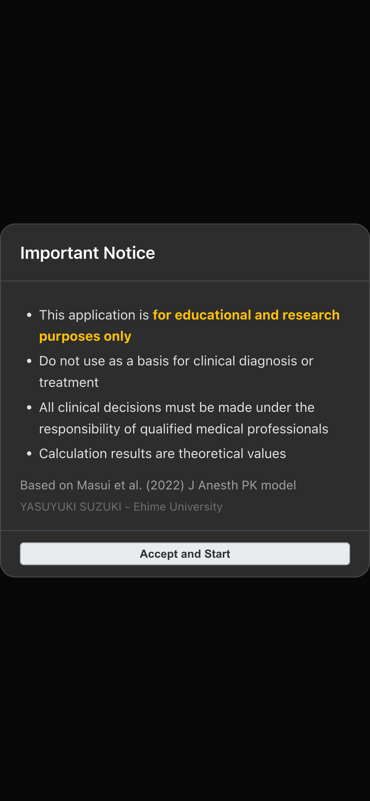
図1: 起動時の免責事項確認画面
画面右上の患者情報ボタン（人型アイコンと 50y 70kg の表示）をタップすると、Patient Information モーダルが開きます。
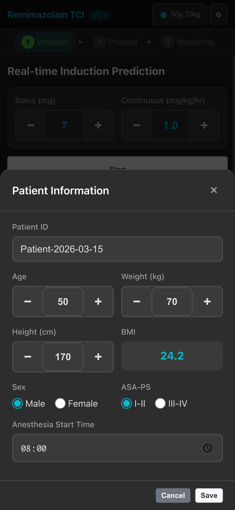
図2: 患者情報設定画面
| 項目 | 既定値 | 範囲 | 説明 |
|---|---|---|---|
| Patient ID | Patient-YYYY-MM-DD | 任意の文字列 | 患者識別子（任意設定） |
| Age（年齢） | 50 | 18 -- 100 | PK パラメータの計算に使用 |
| Weight（体重, kg） | 70 | 30 -- 200 | 持続投与速度の計算に使用 |
| Height（身長, cm） | 170 | 120 -- 220 | BMI の計算に使用 |
| Sex（性別） | Male | Male / Female | PK パラメータの計算に使用 |
| ASA-PS | I-II | I-II / III-IV | 全身状態分類 |
| Anesthesia Start Time | 08:00 | -- | 麻酔開始時刻（Step 3 の時刻表示に使用） |
麻酔導入時のボーラス投与と持続投与による血漿中濃度（Cp）および効果部位濃度（Ce）の推移をリアルタイムでシミュレーションします。 意識消失（Loss of Consciousness）が確認された時点で LOC ボタンを押し、その時の Ce を記録します。
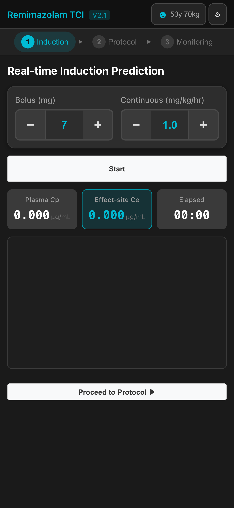
図3: Step 1 初期画面
| パラメータ | 既定値 | 単位 | 説明 |
|---|---|---|---|
| Bolus | 7 | mg | ボーラス投与量（0.5 mg 刻みで調整） |
| Continuous | 1.0 | mg/kg/hr | 持続投与速度（0.1 mg/kg/hr 刻みで調整） |
各パラメータは - / + ボタンで調整するか、数値を直接入力できます。
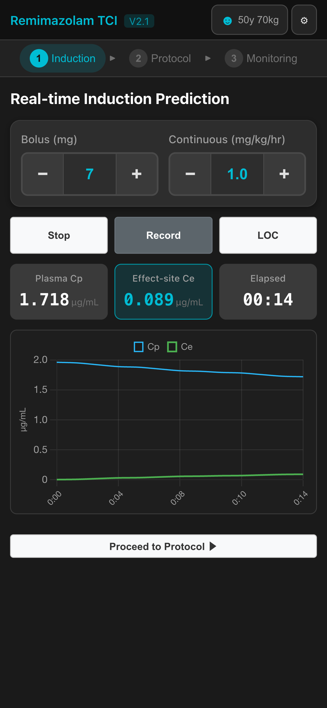
図4: リアルタイムシミュレーション実行中の画面
画面中央のカード表示領域には、以下の値がリアルタイムで表示されます。
シミュレーション実行中、患者の意識消失（Loss of Consciousness）が確認された時点で LOC ボタンをタップします。 そのときの Effect-site Ce が LOC Ce として記録され、画面上に表示されます。
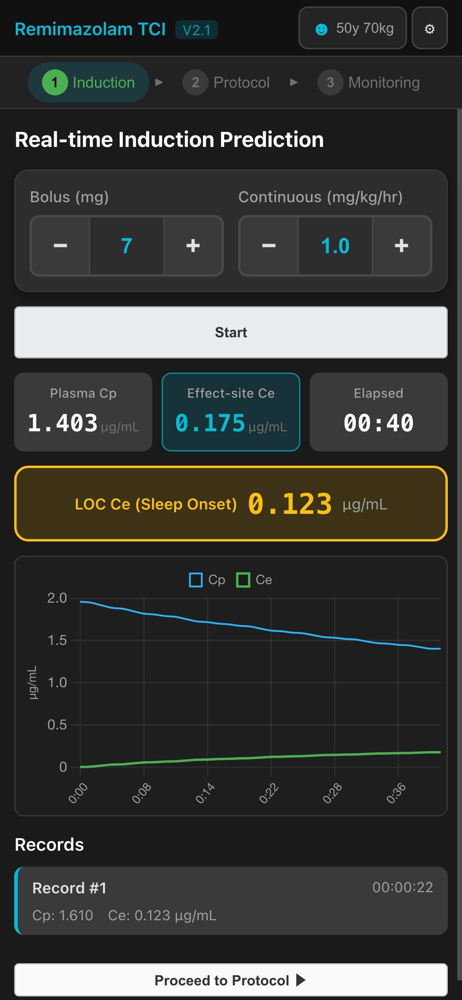
図5: LOC Ce が記録された状態
LOC Ce の記録が完了したら、画面下部の Proceed to Protocol ボタンをタップして Step 2 に進みます。
Step 1 で記録した LOC Ce を基準に、安全マージンを加えた目標濃度（Target Ce）を設定し、 その濃度を維持するための最適な持続投与速度とステップダウンスケジュールを自動計算します。
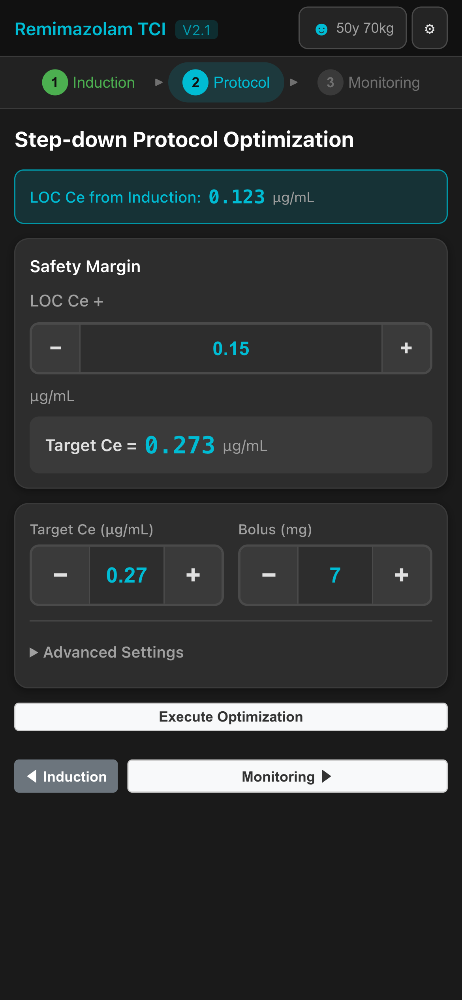
図6: Step 2 初期画面（LOC Ce が Step 1 から自動転送されている）
画面上部のシアン色バナーに Step 1 から引き継がれた LOC Ce が表示されます。Safety Margin の設定項目では以下のように目標濃度が計算されます。
Target Ce = LOC Ce + Safety Margin
| パラメータ | 既定値 | 単位 | 説明 |
|---|---|---|---|
| Safety Margin | 0.15 | ug/mL | LOC Ce に加算する安全マージン（0.01 刻み） |
| Target Ce | 自動計算 | ug/mL | 目標効果部位濃度（手動変更も可能、0.05 刻み） |
| Bolus | 7 | mg | プロトコルで使用するボーラス量（0.5 刻み） |
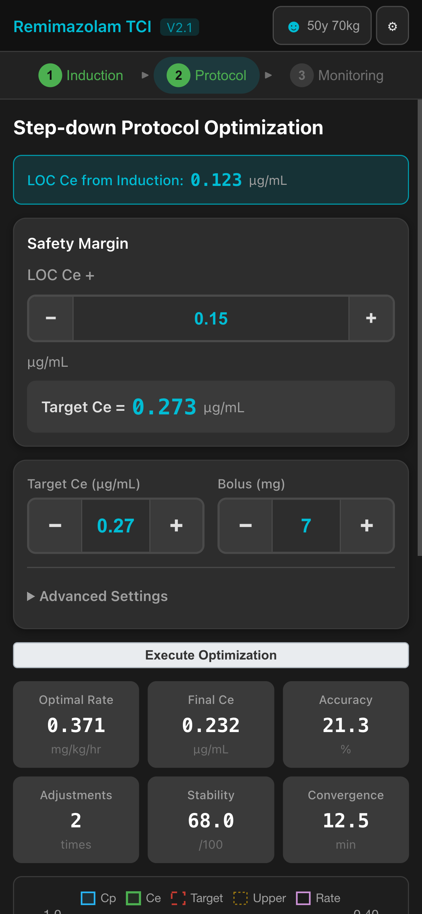
図7: プロトコル最適化の結果カード
最適化完了後、以下の指標が結果カードに表示されます。
| 指標 | 単位 | 説明 |
|---|---|---|
| Optimal Rate | mg/kg/hr | 最適な持続投与速度 |
| Final Ce | ug/mL | シミュレーション終了時の効果部位濃度 |
| Accuracy | % | 目標濃度に対する達成精度 |
| Adjustments | 回 | ステップダウン調整回数 |
| Stability | /100 | 濃度の安定性指標（100 が最高） |
| Convergence | min | 目標濃度への収束時間 |
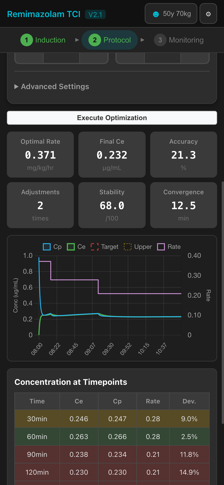
図8: プロトコルの濃度推移チャート
チャートの下には「Dosing Schedule」（投与スケジュール）の折りたたみセクションがあり、展開すると各時点での投与速度の変更タイミングを確認できます。
「Advanced Settings」を展開すると、プロトコル最適化アルゴリズムの追加パラメータを調整できます。
| パラメータ | 既定値 | 範囲 | 説明 |
|---|---|---|---|
| Reach Time（到達時間） | 20 min | 10 -- 60 | 目標濃度に到達するまでの許容時間 |
| Upper Threshold（上限閾値） | 120% | 105 -- 130 | 目標濃度に対する上限の割合 |
| Reduction Factor（減量係数） | 70% | 50 -- 90 | ステップダウン時の投与速度削減割合 |
| Adj. Interval（調整間隔） | 5 min | 3 -- 10 | 投与速度の再評価間隔 |
最適化結果を確認したら、Monitoring ボタンをタップして Step 3 に進みます。プロトコルの結果は Step 3 に自動転送されます。
Step 2 で最適化されたプロトコルに基づいて投与スケジュールが自動入力されます。 実際の投与量を編集・追加し、濃度推移をシミュレーションします。
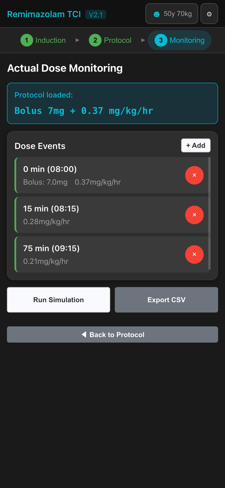
図9: Step 3 初期画面（プロトコルデータが自動転送されている）
画面上部のシアン色バナーには、Step 2 から転送されたプロトコル情報（ボーラス量と持続投与速度）が表示されます。
Dose Events セクションには、Step 2 のプロトコルから転送されたイベントが一覧表示されます。各イベントには以下の情報が含まれます。
0 min (08:00)）Bolus: 7.0mg）0.37mg/kg/hr）既存のイベントを削除するには、各イベント右側の赤い削除ボタンをタップします。
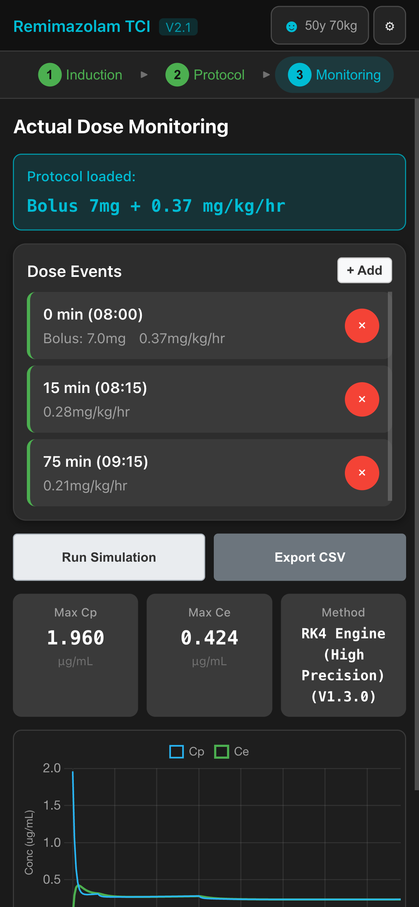
図10: シミュレーション結果の表示
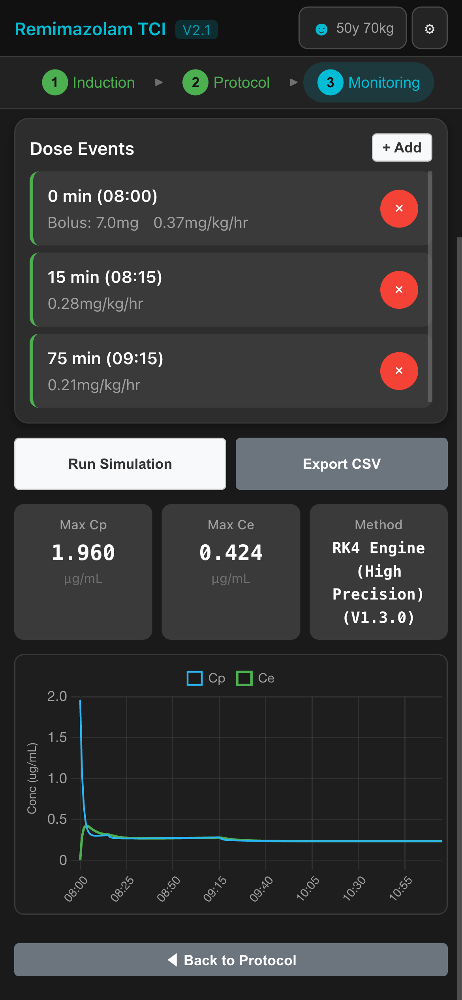
図11: モニタリングチャート
Export CSV ボタンをタップすると、シミュレーション結果を CSV 形式でダウンロードできます。 エクスポートされるデータには、時間、投与量、血漿中濃度、効果部位濃度の推移が含まれます。
本アプリケーションは 3 ステップを順番に進める設計です。各ステップのデータは次のステップに自動的に引き継がれます。
ステップ間の移動は、画面上部のタブナビゲーション（1 Induction / 2 Protocol / 3 Monitoring）、または各ステップ下部のナビゲーションボタンで行えます。
本アプリケーションは、以下の文献に記載されたレミマゾラムの母集団薬物動態モデルに基づいています。
モデルは 3 コンパートメント PK モデル（中心コンパートメント、末梢浅部コンパートメント、末梢深部コンパートメント）とエフェクトコンパートメントで構成されています。患者の年齢・体重・性別・ASA-PS に基づいて PK パラメータ（分布容積、クリアランス等）が個別に計算されます。
| 項目 | 単位 |
|---|---|
| ボーラス投与量 | mg |
| 持続投与速度 | mg/kg/hr |
| 血漿中濃度（Cp） | ug/mL |
| 効果部位濃度（Ce） | ug/mL |
画面右上の歯車アイコンをタップすると、エラー診断画面にアクセスできます。 技術的な問題が発生した場合は、この画面のエラーログを確認してください。
本アプリケーションは Masui et al. (2022) Journal of Anesthesia に掲載された薬物動態モデルに基づいて構築されています。 モデルの適用範囲や限界については、原著論文を参照してください。